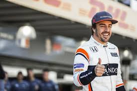
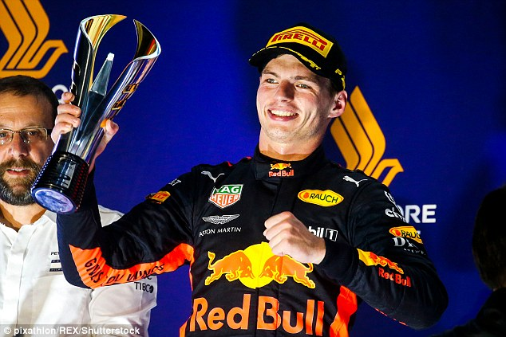
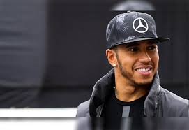

ALONSO
Sendo um dos pilotos mais velhos no automobilismo Fernando Alonso coleciona trofeus e títulos. O piloto espanhol tem 2 campeonatos mundiais pela Formula 1, participou de 308 GP's, e tem incriveis 97 podiums na sua carreira pela F1. Atualmente Alonso corre pela McLaren e está 8° lugar no campeonato mundial.
VETTEL
Tetra campeão mundial correndo pela Red Bull Racing, Sebastian Vettel mudou os conceitos de talento na pilatagem de um carro. Sebastian foi o primeiro a levar uma Toro Rosso ao podium, se consagrando eternamente na equipe. Após este feito o alemão passou pra equipe principal, e se tornou o tetra campeão mais jovem de toda a história da F1.

VERSTAPPEN
Dizem o talento pula uma geração, então Max Verstappen faz jus ao ditado popular. O jovem piloto de 20 anos já demonstrou que tem muito mais malícia ao volante que seu pai Jos Verstappen em toda sua carreira. Em apenas dois anos Max já tem 17 podiums e 4 vitórias na sua ficha, e é uma das promessas da nova geração da F1.
HAMILTON
Lewis Hamilton é o homem a ser batido atualmente nas corridas, mesmo não tendo o melhor carro da temporada, Lewis tem a sorte e a habilidade a seu favor. Já chegou a quebrar recordes das Lendas do Esporte, como Ayrton Senna e Michael Schumacher, tendo consigo a marca de 69 vitórias, 129 podiums e 4 campeonatos mundiais. Correndo pela Flecha Prateada, Lewis tem tudo para faturar mais um campeonato este ano.
